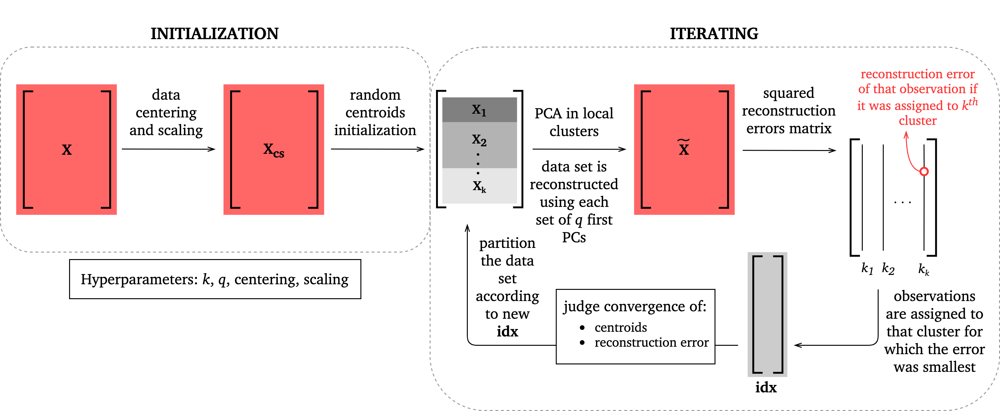

Clustering¶
clustering.py module contains functions for classifying data sets into local clusters and performing some basic operations on clusters [1], [2].
Clustering functions¶
Each function that clusters the data set returns a vector idx of type numpy.ndarray of size (n_observations,) that specifies classification of each observation from the original data set X to a local cluster.

Note
The first cluster has index 0 within all idx vectors returned. When verbose information is printed with verbose=True during function execution or on the plots the cluster numeration starts with 1.
-
PCA.clustering.variable_bins(var, k, verbose=False)¶ This function does clustering by dividing a variable vector
varinto bins of equal lengths.- Parameters
var – vector of variable values.
k – number of clusters to partition the data.
verbose – (optional) boolean for printing clustering details.
- Raises
ValueError – if number of clusters
kis not a positive integer.- Returns
idx - vector of indices classifying observations to clusters.
# var_min var_max
# |----------|----------|----------|----------|----------|
# bin 1 bin 2 bin 3 bin 4 bin 5
-
PCA.clustering.predefined_variable_bins(var, split_values, verbose=False)¶ This function does clustering by dividing a variable vector
varinto bins such that the split is done at values specified in thesplit_valueslist.Note: When a split is performed at a given
value_i, the observation invarthat takes exactly that value is assigned to the newly created bin.- Parameters
var – vector of variable values.
split_values – list containing values at which the split to bins should be performed.
verbose – (optional) boolean for printing clustering details.
- Raises
ValueError – if any value within
split_valuesis not within the range of vectorvarvalues.- Returns
idx - vector of indices classifying observations to clusters.
# var_min value_1 value_2 value_3 var_max
# |----------|--------------------|------------|---------|
# bin 1 bin 2 bin 3 bin 4
-
PCA.clustering.mixture_fraction_bins(Z, k, Z_stoich, verbose=False)¶ This function does clustering by dividing a mixture fraction vector
Zinto bins of equal lengths. The vector is first split to lean and rich side and then the sides get divided further into clusters. Whenkis even, this function will always create equal number of clusters on the lean and rich side. Whenkis odd, there will be one more cluster on the rich side compared to the lean side.- Parameters
Z – vector of mixture fraction values.
k – number of clusters to partition the data.
Z_stoich – stoichiometric mixture fraction.
verbose – (optional) boolean for printing clustering details.
- Raises
ValueError – if number of clusters
kis not a positive integer.- Returns
idx - vector of indices classifying observations to clusters.
# Z_min Z_stoich Z_max
# |-------|-------|------------|------------|------------|
# bin 1 bin 2 bin 3 bin 4 bin 5
-
PCA.clustering.pc_source_bins(pc_source, k, zero_offset_percentage=0.1, split_at_zero=False, verbose=False)¶ This function does clustering by dividing a PC-source vector
pc_sourceinto bins. By default, it finds one cluster between a negative and a positive offset from PC-source=0. The offset is computed from the input parameterzero_offset_percentagewhich specifies a percentage of the rangepc_source_max - pc_source_min. Further clusters are found by clustering positive and negative PC-sources alternatingly into bins of equal lengths.If
split_at_zerois set toTrue, the partitioning will always find one cluster that is between-offsetand 0 and another cluster that is between 0 and+offset.Due to the nature of this clustering technique, the smallest allowed number of clusters is 3 if
split_at_zero=False. This is to assure that there are at least there three clusters: with high negative values, with close to zero values, with high positive values.If
split_at_zero=True, the smallest allowed number of clusters is 4. This is to assure that there are at least four clusters: with high negative values, with negative values close to zero, with positive values close to zero and with high positive values.- Parameters
pc_source – vector of variable values.
k – number of clusters to partition the data. Cannot be smaller than 3 if
split_at_zero=Falseor smaller than 4 ifsplit_at_zero=True.zero_offset_percentage – (optional) percentage of
|pc_source_max - pc_source_min|to take as theoffsetvalue.split_at_zero – (optional) boolean specifying whether partitioning should be done at PC-source=0.
verbose – (optional) boolean for printing clustering details.
- Raises
ValueError – if number of clusters
kis not an integer or smaller than 3 whensplit_at_zero=Falseor smaller than 4 whensplit_at_zero=True.ValueError – if PC-source vector
pc_sourcehas only non-negative or only non-positive values. For such vectors it is recommended to usepredefined_variable_binsfunction instead.ValueError – if the requested offset from zero crosses the minimum or maximum value of the PC-source vector
pc_source. If that is the case, it is recommended to lower thezero_offset_percentagevalue.
- Returns
idx - vector of indices classifying observations to clusters.
# -offset +offset
# \ /
# pc_source_min | 0 | pc_source_max
# |----------|----------|---|----------|----------|----------|
# bin 1 bin 2 bin 3 bin 4 bin 5 bin 6
# -offset 0 +offset
# \ | /
# pc_source_min | | | pc_source_max
# |----------|----------|--|--|----------|----------|----------|
# bin 1 bin 2 / \ bin 5 bin 6 bin 7
# / \
# bin 3 bin 4
-
PCA.clustering.vqpca(X, k, n_pcs, scaling_criteria, idx_0=[], maximum_number_of_iterations=1000, verbose=False)¶ This function performs Vector Quantization clustering using Principal Component Analysis. VQPCA assigns observations to a particular cluster based on the minimum reconstruction error from PCA approximation with
n_pcsnumber of Principal Components. This is an iterative procedure in which the reconstruction errors are evaluated for every observation as if that observation belonged to cluster j and next, the observation is assigned to that cluster for which the error was smallest.Note: VQPCA algorithm will center the global data set
Xby mean and scale by the scaling specified in thescaling_criteriaparameter. Data in local clusters will be centered by the mean but will not be scaled.- Parameters
X – raw global data set, uncentered and unscaled.
k – number of clusters to partition the data.
n_pcs – number of Principal Components (PCs) that will be used to reconstruct the data at each iteration.
scaling_criteria – scaling critertion for the global data set.
idx_0 – (optional) user-supplied initial
idxfor initializing the centroids. By default random intialization is performed.maximum_number_of_iterations – (optional) the maximum number of iterations that the algorithm will loop through.
verbose – (optional) boolean for printing clustering details.
- Raises
ValueError – if the number of observations in the data set
Xdoes not match the number of elements in theidx_0vector.- Returns
idx - vector of indices classifying observations to clusters.
VQPCA algorithm used here was first proposed in [parente2009identification]. The general scheme for the iterative procedure is presented below:
{kind=link}
Auxiliary functions¶
-
PCA.clustering.degrade_clusters(idx, verbose=False)¶ This function renumerates clusters if either of these two cases is true:
idxis composed of non-consecutive integers, orthe smallest cluster number in
idxis not equal to0.
Example:
Starting with an
idxthat is the following:[0, 0, 2, 0, 5, 10]this function turns thisidxto:[0, 0, 1, 0, 2, 3], where clusters are numbered with consecutive integers.Alternatively, if
idxis:[1, 1, 2, 2, 3, 3]this function turns thisidxto:[0, 0, 1, 1, 2, 2]so that the smallest cluster number is equal to0.- Parameters
idx – raw vector of indices classifying observations to clusters.
verbose – (optional) boolean for printing clustering details.
- Returns
idx_degraded degraded vector of indices classifying observations to clusters. The first cluster has index 0.
k_update - the updated number of clusters.
-
PCA.clustering.flip_clusters(idx, dictionary)¶ This function flips the cluster labelling according to instructions provided in the dictionary. For a
dictionary = {key : value}, a cluster with a numberkeywill get a numbervalue.- Parameters
idx – vector of indices classifying observations to clusters. The first cluster has index 0.
dictionary – a dictionary specifying the cluster numeration flipping instructions.
- Returns
flipped_idx - vector of indices classifying observations to clusters. The first cluster has index 0.
-
PCA.clustering.get_centroids(X, idx)¶ This function computes the centroids for the clustering specified in the
idxvector.- Parameters
X – data set for computing the cluster centroids.
idx – vector of indices classifying observations to clusters. The first cluster has index 0.
- Raises
ValueError – if the number of observations in the data set
Xdoes not match the number of elements in theidxvector.- Returns
centroids - matrix of cluster centroids. It has size
ktimes number of observations.
-
PCA.clustering.get_partition(X, idx, verbose=False)¶ This function partitions the observations from the original global data set
Xinto local clusters according toidxprovided. It returns a tuple of three variables(data_in_clusters, data_idx_in_clusters, k_new), wheredata_in_clustersare the original observations fromXdivided into clusters,data_idx_in_clustersare the indices of the original observations divided into clusters. If any cluster is empty or has less observations assigned to it that the number of variables, that cluster will be removed and the observations that were assigned to it will not appear indata_in_clustersnor indata_idx_in_clusters. The new number of clustersk_newis computed taking into account any possibly removed clusters.- Parameters
X – data set to partition.
idx – vector of indices classifying observations to clusters. The first cluster has index 0.
verbose – (optional) boolean for printing details.
- Returns
data_in_clusters - list of
k_newarrays that contains original data set observations in each cluster.data_idx_in_clusters - list of
k_newarrays that contains indices of the original data set observations in each cluster.k_new - the updated number of clusters.
-
PCA.clustering.get_populations(idx, verbose=False)¶ This function computes populations (number of observations) in clusters specified in the
idxvector. As an example, if there are 100 observations in the first cluster and 500 observations in the second cluster this function will return a list:[100, 500].- Parameters
idx – vector of indices classifying observations to clusters. The first cluster has index 0.
verbose – (optional) boolean for printing details.
- Returns
populations - list of cluster populations. Each entry referes to one cluster ordered according to
idx.